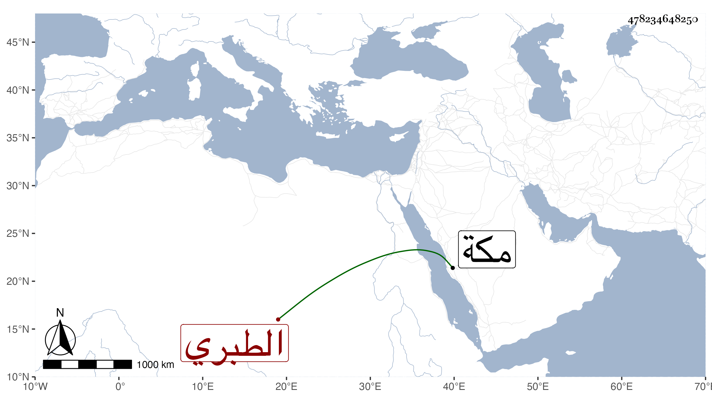

0902Sakhawi.DawLamic.ITO20230111-ara1.EIS1600.478234648250
Biography ID: 478234648250
346
ست الكل ابنة الرضى محمد بن المحب محمد بن الشهاب أحمد بن الرضى إبراهيم بن محمد بن إبراهيم الطبري ، أمها عائشة ابنة أحمد بن حسن بن الزين . أجاز لها في سنة خمس وثمانمائة ابن صديق والمراغى والعراقي والهيثمي وعائشة ابنة ابن عبد الهادي وغيرهم ؛ وتزوجها الشمس محمد بن محمد بن محمد بن عبد الرحمن الاقفاصي فأولدها ومات فتأيمت وفي عقلها بعض شيء . ماتت في رجب سنة سبع وستين بمكة .
